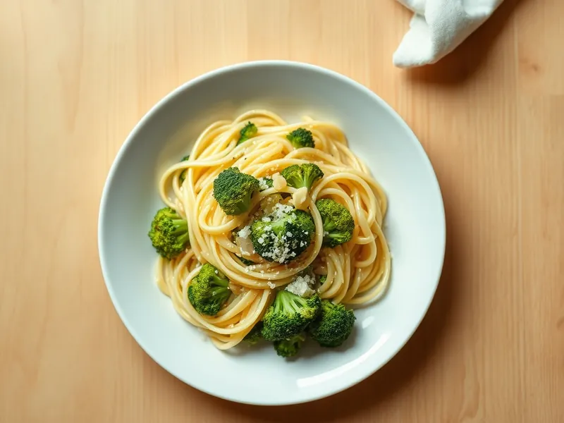

Фото: Иллюстрация ИИ, Cloudflare Workers AI
Паста с брокколи и чесноком
Макароны и брокколи, сваренные в одной кастрюле, с чесночным маслом и пармезаном
20 мин2 порц.609 ккал на порциюБ 22 · Ж 22 · У 81Итальянская кухня
Продукты на 2 порц.
- Макароны200 г
- Брокколи300 г
- Чеснок2 зуб.
- Оливковое масло2 ст. л.
- Пармезан40 г
- Острый перец молотый по желанию1 щеп.
- Соль2 ч. л.
- Вода2000 мл
Как готовить
- Брокколи разберите на мелкие соцветия. Вскипятите воду на сильном огне и посолите.
- Положите пасту, а за 4 минуты до её готовности добавьте брокколи в ту же кастрюлю.
- Пока всё варится, прогрейте масло с нарезанным чесноком и чили на слабом огне 3 минуты до светло-золотистого цвета.
- Отлейте 100 мл воды, пасту с брокколи откиньте и переложите в сковороду с чесноком.
- Перемешайте на среднем огне 1-2 минуты, подливая воду, слегка разминая часть соцветий, чтобы получился соус. Посыпьте пармезаном.
Совет. Замороженная брокколи тоже подойдёт, кладите её прямо из морозилки за 3 минуты до конца варки.